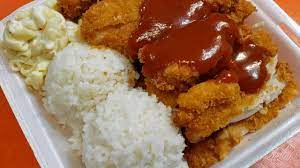

Chicken Katsu

Chicken Katsu Plate Lunch
Chicken katsu is a meal that is nostalgic and brings me fond memories. It's not a dish in which I will impress my doctor with the amount of vitamins you get from it nor is it a meal that you can impress the dalai lama with. But it is a definite comfort dish that truly warms my heart.
Ingredients
- 2 large eggs
- 3/4 cup cornstarch
- 1/4 teaspoon ground pepper
- 1/4 teaspoon garlic powder
- 1 cup water
- 15-20 chicken thighs, bneless & skinless
- 1 pound panko bread crumbs
Katsu Sauce
- 1/2 cup worcestershire sauce
- 1 cup kechup
- 1 cup sugar
- 2 1/2 cup water
- 1/3 teaspoon salt
- 1/4 teaspoon ground pepper
- 1/4 teaspoon chicken bouillon
- 1/4 teaspoon garlic powder
- 2-3 dash tabasco sauce
Directions
- To make sauce: Combine all ingredients and bring to a boil. Add cornstarch dissolved in water to thicken. Chill and serve. ***I would always make the sauce first to chill for a few hours before the chicken was ready (the sauce thickens in the refrigerator)***
- Open the chicken thighs and flatten. In a bowl, combine eggs, cornstarch, pepper, garlic powder, and water. In a seperate bowl pour in your panko bread crumbs. First dip the chicken in the egg batter to coat, then dip chicken in the panko bread crumbs. Fry in oil (maximum 325 degrees) until brown and crispy.
- Cut chicken into strips and serve with sauce. Serve with a few scoops of hot, sticky, white rice and a scoop of macaroni salad for a true plate lunch special like L&L Hawaiian Barbecue! Serves 7-10.